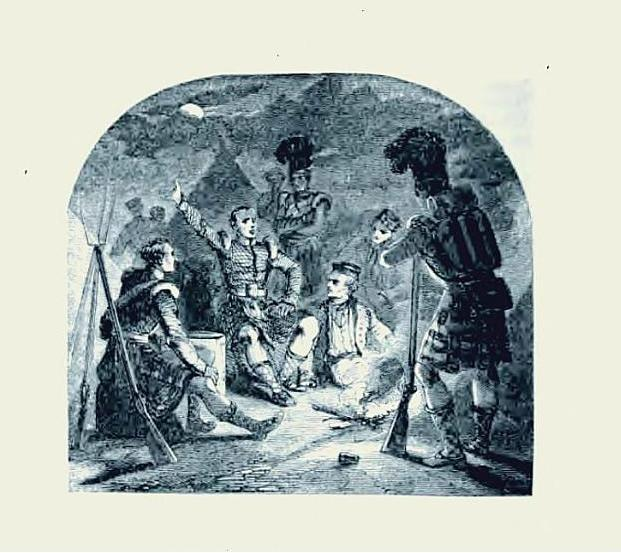

The Highland Character
Raising of the "Black Watch" in 1725
Lyrics by Sir Harry Erskine
from David Herd's "Ancient and Modern Scottish Songs", volume 1, p. 116, 1769
and Scots Musical Museum, volume III, N°209, 1790
Tune
(42d Regiment's March )
by General Reid
Scots Musical Museum N°209
Tune sequenced by Ch.Souchon


|
1. In the garb of old Gaul (*) with the fire of old Rome,
From the heath cover'd mountains of Scotia we come, Where the Roman's endeavour'd our country to gain, But our ancestors fought, and they fought not in vain. Chorus Such our love of liberty, our country and our laws, That like our ancestors of old, we stand by freedom's cause, We'll bravely fight like heroes bright for honour and applause And defy the French with all their arts to alter our laws. 2. No effeminate customs our sinews unbrace, No luxurious tables enervate our race; (**) Our loud sounding pipe breathes the true martial strain And our hearts still the old Scottish valour retain. Chorus 3. We sons of the mountains tremendous as rocks, Dash the force of our foes with our thundering strokes. As a storm in the ocean when Boreas blows, So are we enrag'd when we rush on our foes, Chorus 4. We're tall as the oak on the mount of the vale, Are as swift as the roe which the hound doth assail; As the full moon in autumn our shields do appear, Minerva would dread to encounter our spear. Chorus 5. Quebec and Cape Breton, the pride of old France, In their troops fondly boasted till we did advance, But when our claymores they saw us produce, Their courage did fail and they sued for a truce. Chorus 6. In our realm may the fury of faction long cease; May our councils be wise and our commerce increase, And in Scotia's cold climate may each of us find That our friends still prove true, and our beauties prove kind. Then we'll defend our liberty, our country and our laws, And teach our late posterity to fight freedom's cause, That like our bold ancestors for honour and applause May defy the French with all their arts to alter our laws. (*) The Highland garb was believed to be that old.. (**) Is the inference that a real Briton should be a bad cook? |
1. Sous l'habit des Gaulois (*), remplis d'ardeur romaine,
Quittons nos monts où la bruyère a son domaine, Et que Rome à contraindre à sa loi ne parvint. Nos pères ont lutté: ce ne fut point en vain. Refrain Chérissons la liberté, nos lois et notre pays. Comme nos glorieux aïeux, craignons d'être asservis Nous combattons avec passion pour la gloire et l'honneur. Nous défions la France et lui fermons nos coeurs. 2. Notre vigueur hait trop ces moeurs efféminées, Le luxe de leurs mets lui demeure étranger. (**) La cornemuse enflamme par ses chants nos âmes C'est l'antique valeur des Scots qu'elle proclame. Refrain 3. Tels la tempête en mer lorsque souffle Borée, L'ennemi nous voit fondre sur lui terrifié, Nous les fils de ces monts, tels des rocs, effroyables, Abattons l'ennemi de nos coups redoutables Refrain 4. Par notre taille nous évoquons les sapins, Par notre agilité, le cerf qui fuit les chiens; Nos écus luisent tels la lune au fond des cieux, Et Minerve aurait peur d'affronter nos épieux. Refrain 5. Québec et Cap Breton, ces joyaux de la France, Pensaient avec leurs fers contenir notre avance, Mais lorsque sur leurs fronts nos claymores se lèvent, Ils perdent tout courage, implorant une trêve. Refrain 6. Que cessent les factions, fléau de notre empire; Sagement gouverné, il ne peut que fleurir, Et l'Ecosse si froide à chacun montrera Qu'elle lui garde intacts son amour et sa foi. Chérissons la liberté, nos lois et notre pays. Apprenons aux générations comment lutter pour lui Afin que tout comme nous dans la gloire et l'honneur. Ils défient la France et lui ferment leurs coeurs. (*) On pensait que le costume des Highlands était aussi ancien. (**) Doit-on en conclure qu'un bon Britannique est un mauvais cuisinier?
(Trad. Ch.Souchon(c)2006)
|
|
According to Robert Riddell of Glenriddell, friend of Robert Burns and fellow commentator on the 'Museum', 'this tune was the composition of Gen. Reid and called by him "The Highland, or 42d Regiment's march".
The melody is more familiarly known by part of the first line of the song, 'In the garb of old Gaul'. The words (that seem to be taken from a Murdoch Press tabloid) are by "Sir Harry Erskine"'. It is worth noting that 'Sir Harry', in Riddell's note, is actually written in Burns's handwriting (who was by then applying for an employment as an exciseman). *******************
The Black Watch was raised in a unique way. In the wake of 1715 Jacobite rebellion, following the recommendation of some Highland nobles like the
Lord President Forbes
, companies of trustworthy Highlanders were raised from local clans, Campbells, Grants,
Frasers
and Munroes.
From the colour of the uniform, the regular troops were locally called "Saighdearan dearg" (Red Coats), whereas the Highlanders on account of their sombre dress (see background picture) were called "Freiceadan dubh" , Black Watch.
Another song on the Black Watch by Lady Nairne: Bannocks o' Bear Meal /2 |
Selon Robert Riddell de Glenriddell, ami de Robert Burns et son collaborateur au "Musée Musical Ecossais" pour les commentaires, 'ce morceau fut composé par le Général Reid qui l'intitula "Le Régiment des Highlands" ou la Marche du 42ème Régiment".
Cette mélodie est plus connue (outre Manche) d'après la première ligne du texte 'In the garb of old Gaul' (l'habit du Gaulois). Les paroles (qui semblent tout droit sorties d'un tabloïde façon Murdoch) sont de "Sir Harry" Erskine. On notera que le 'Sir Harry' provient d'un ajout manuscrit à la note de Riddell par Burns (qui postulait alors pour un emploi d'agent de l'accise). *******************
L'origine de la Garde Noire est particulière. A la suite du soulèvement Jacobite de 1715, selon la recommandation de certains nobles des Highlands tels que le
Lord President Forbes
des compagnies de Highlanders demeurés fidèles aux Hanovre furent recrutées sur place dans les clans Campbell, Grant,
Fraser
and Munro.
En raison de la couleur de leur uniforme, les troupes régulières étaient appelées localement "Saighdearan dearg" (Soldats rouges), tandis que les Highlanders étaient désignés à cause de leur tenue sombre (cf. image de fond) par le terme de "Freiceadan dubh" (Gardes Noirs) ******************* Autre chant sur la Garde Noire par Lady Nairne: Galettes de Gruau /2 |